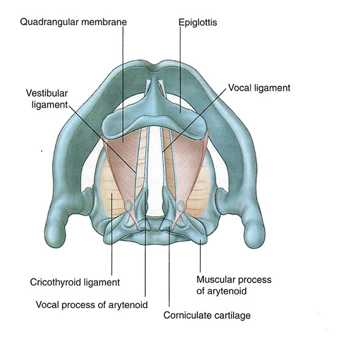

We will now rotate these structures so we see them as if the patient is supine and we are looking from the top of the head. This is how it would appear if you are performing direct laryngoscopy in preparation for endotracheal intubation.
Take time to re-orient yourself by identifying the previously added structures.

🔍 Ligaments
Add the vocal ligaments which connect to the cricoid cartilage.
The space between the vocal ligaments is known as the rima glottidis.
Add the vestibular ligamentswhich connect to the epiglottis.
The space between the vestibular ligaments is known as the rima vestibuli.
With the drawing as a guide, use the table's Highlight tool to identify these ligaments, realizing that the connective tissue will be absent.